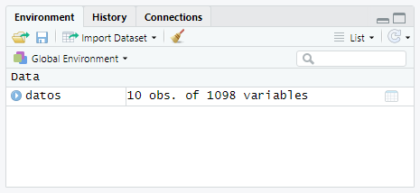

Importar datos
Introducción
Tras concluir el apartado anterior, sabemos mucho sobre representación gráfica. Sin embargo, todavía no conocemos cómo emplear todo lo estudiado en nuestros propios trabajos. A partir de este momento, vamos a seguir el flujo normal de trabajo en la ciencia de datos, de forma que vamos a ser capaces de importar, ordenar y modificar nuestros propios sets de datos.
Vamos a emplear el paquete de Tidyverse readr, que es el que se encarga de importar los datos. Abrimos RStudio y activamos la librería:
1 | |
Tibbles
Antes de continuar con el apartado de importación de datos, es importante conocer lo que son los tibbles. El código base de R utiliza data frames a la hora de representar datos en tablas. Sin embargo, estos son un poco antiguos y a veces se hace un poco engorroso trabajar con ellos. Tidyverse trata de solucionar esto empleando el paquete "tibble".
Los tibbles funcionan muy parecido a los data frame, pero presentan características que los hace mucho más sencillo trabajar con ellos:
- Son mucho más rápidos.
- No transforman los vectores de caracteres a factores, cosa que sí ocurre con los
data.frame. - Son más reproducibles, es decir, es más probable que aquellos que trabajen con los mismos datos que tú lleguen a los mismos resultados.
Podemos transformar cualquier data frame en un tibble empleando as_tibble(). Por ejemplo, usemos esta función con iris, un data frame incluido en R:
1 | |
1 2 3 4 5 6 7 8 9 10 11 12 13 14 | |
También puedes crear tus propios tibbles desde cero. Para ello, empleamos la función tibble(), que construye las tablas por columnas. Por ejemplo:
1 2 3 4 5 | |
1 2 3 4 5 6 7 8 | |
Nota
Los tibbles ofrecen muchas posibilidades a la hora de crear tablas de datos. Si quieres saber más, puedes usar el comando ?tibble, o puedes consultar el manual oficial de Tidyverse aquí.
Importando datos
Importar archivos de datos es muy sencillo, simplemente usa una de las siguientes funciones, dependiendo del tipo de delimitador por el que estén separados tus datos:
| FUNCIÓN | DELIMITADOR |
|---|---|
read_csv() |
Coma |
read_csv2() |
Punto y coma |
read_tsv() |
Tabulaciones |
read_table() |
Espacio |
Razona:
Encuentra un comando con el que puedas leer archivos con cualquier delimitador.
Pista:
Puedes revistar todos los comandos disponibles con ?read_delim
Respuesta
1 | |
Si, por ejemplo, nuestro archivo llamado datos.txt emplea barras (/) como delimitadores escribimos:
1 | |
A partir de ahora, salvo excepciones, vamos a utilizar datos no incluidos dentro del paquete Tidyverse, empleando alguna de las funciones anteriores u otros paquetes.
Ejercicio
Adelantemos un poco de trabajo. Abre y descarga este conjunto de datos y, teniendo en cuenta sus delimitadores, impórtalo a R.
Respuesta
Antes de bajarlo podemos comprobar que el archivo emplea tabulaciones como delimitadores. Por tanto, tras descargarlo en nuestro working directory, lo importamos y le asignamos la variable datos:
1 | |

Ejercicios
Ejercicios de repaso
Para ver si has entendido todo, intenta realizar estos ejercicios propuestos. Para saber cómo hacerlos, visita el apartado de "Realización de ejercicios". Tras esto, ejecuta el siguiente comando:
1 | |